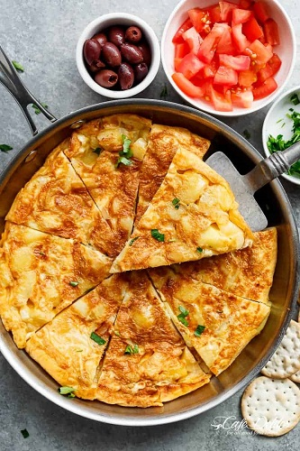

Spanish Omlette

Recipe and images from Cafe Delites
Instructions
-
Heat oil in a nonstick pan. Fry potatoes until crispy. Add onions and fry until translucent.
Drain oil from pan.
-
Return potatoes and onions to pan, arranging in single layer. reduce heat to low.
-
Mix eggs with salt an peper to taste. Pour eggs over vegetables, taking care to mix evenly.
-
Cover the eggs with a large plate and flip the omlette onto the plate. Slide the omlette back
onto the pan.
-
Continue to cook until cooked through.
-
Remove from the pan in the same way as before, slice, and enjoy!